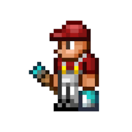

El pintor es un NPC del juego que vende pintura de diversos colores, herramientas para pintar y algunos cuadros. Para conseguirlo, debes tener al menos 8 NPCs en sus respectivos hogares y tener una casa habitable disponible para él, se defiende con una Paintball Gun y puede dejarla si lo matan.
El pintor |
|
 |
|
Estadisticas |
|
Tipo |
NPC |
Salud |
250 |
Arma |
Pistola de pintura |
Defensa |
15 |
Especialidad |
Vende objetos de pintura |
Bestiario |
|
Descripcion |
El Pintor puede hablar sobre los diferentes sombreados de los colores con el cual puedes pintar las paredes. ¡Él venderá solo un puñado de ellos! |
Bioma preferido |
La selva |
Deja |
|
Pistola de pintura |
10% |
IDs internas |
|
ID de bestiario |
227 |
ID de NPC |
9 |
En el Modo difícil:
Cuando hay Fiesta:
| Objeto | Precio | Disponibilidad |
|---|---|---|
| Pincel | 1 |
Siempre disponible |
| Rodillo | 1 |
Siempre disponible |
| Rasqueta | 1 |
Siempre disponible |
| Pintura roja | 25 |
Siempre disponible |
| Pintura naranja | 25 |
Siempre disponible |
| Pintura amarilla | 25 |
Siempre disponible |
| Pintura verde lima | 25 |
Siempre disponible |
| Pintura verde | 25 |
Siempre disponible |
| Pintura verde azulado | 25 |
Siempre disponible |
| Pintura turquesa | 25 |
Siempre disponible |
| Pintura azul celeste | 25 |
Siempre disponible |
| Pintura azul | 25 |
Siempre disponible |
| Pintura morada | 25 |
Siempre disponible |
| Pintura violeta | 25 |
Siempre disponible |
| Pintura rosa | 25 |
Siempre disponible |
| Pintura negra | 25 |
Siempre disponible |
| Pintura gris | 25 |
Siempre disponible |
| Pintura blanca | 25 |
Siempre disponible |
| Pintura marrón | 25 |
Siempre disponible |
| Pintura sombra | 50 |
Después de derrotar al Muro carnoso |
| Pintura negativa | 75 |
Después de derrotar al Muro carnoso |
| Luz diurna | 1 |
Siempre disponible |
| Primer encuentro | 1 |
Durante las fases de luna |
| Buenos días | 1 |
Durante las fases de luna |
| Recompensa subterránea | 1 |
Durante las fases de luna |
| A través de la ventana | 1 |
Durante las fases de luna |
| La tierra árida vuelve a la vida | 1 |
Estar en el Carmesí |
| Abismo sin luz | 1 |
Estar en la Corrupción |
| La tierra de las miradas engañosas | 1 |
Tener una casa en la Bendición |
| No pisar el césped | 1 |
Tener una casa en la Selva |
| Aguas frías en tierra blanca | 1 |
Tener una casa en la Tundra |
| El secreto de la arena | 1 |
Tener una casa en el Desierto |
| Presencia maligna | 1 |
Durante Luna de Sangre |
| Un lugar sobre las nubes | 1 |
Tener una casa en el Espacio exterior |
| Guardián celestial | 1 |
Tener una casa en el Espacio exterior en Modo difícil |
| Fondo de burbujas | 1 |
Siempre disponible |
| Fondo de tubería de cobre | 1 |
Siempre disponible |
| Fondo de pato | 1 |
Siempre disponible |
| Fondo gris bonito | 1 |
Siempre disponible |
| Fondo helado | 1 |
Siempre disponible |
| Fondo musical | 1 |
Siempre disponible |
| Fondo de lluvia púrpura | 1 |
Siempre disponible |
| Fondo arcoíris | 1 |
Siempre disponible |
| Fondo piedra chispeante | 1 |
Siempre disponible |
| Fondo cielo iluminado de estrellas | 1 |
Siempre disponible |
| Fondo de árbol de Navidad | 1 |
Durante Navidad |
| Fondo de bastón de caramelo | 1 |
Durante Navidad |
| Fondo de estrellas | 1 |
Durante Navidad |
| Fondo de copos de nieve | 1 |
Durante Navidad |
| Fondo azul verdoso | 1 |
Durante Navidad |
| Fondo ornamental | 1 |
Durante Navidad |
| Fondo festivo | 1 |
Durante Navidad |
| Fondo de garabatos | 1 |
Durante Navidad |
| Fondo de cuernos de Krampus | 1 |
Durante Navidad |
| Fondo de dedo del Grinch | 1 |
Durante Navidad |